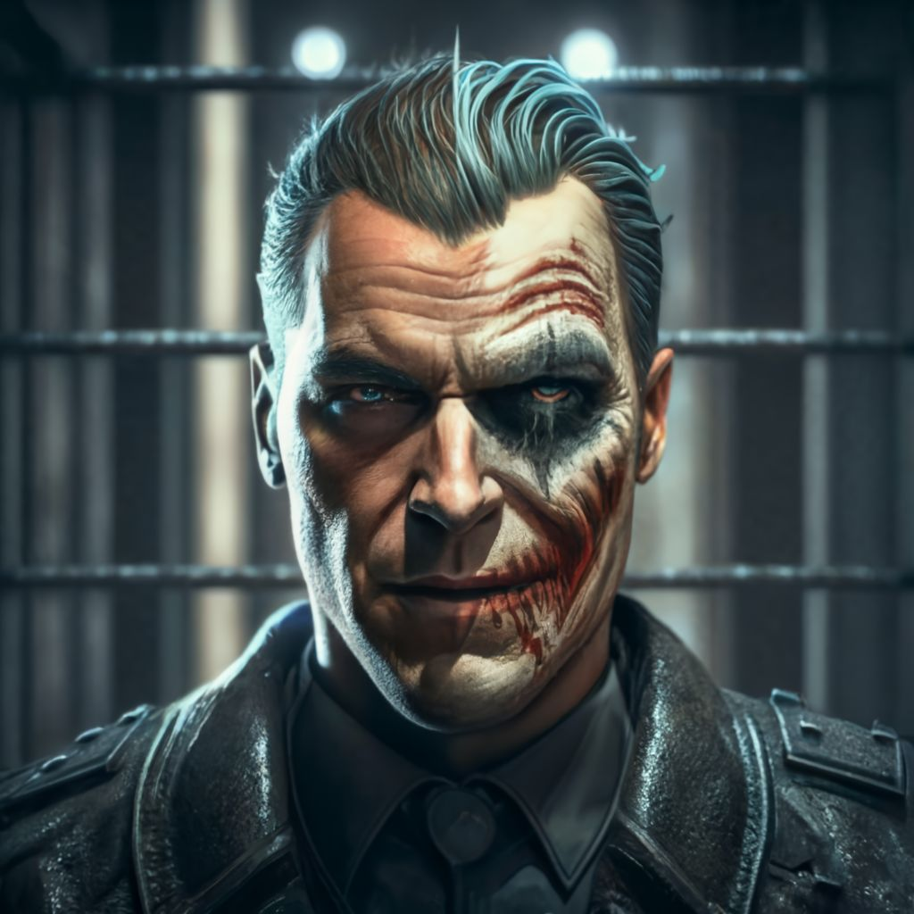

Optando por la sutileza y el elemento de sorpresa, Batman decidió infiltrarse en la sala principal a través de los conductos de ventilación. Sabía que esta maniobra era arriesgada, pero confiaba en su habilidad para moverse sin ser detectado. Deslizándose silenciosamente por los estrechos pasadizos, se acercó a la posición justo encima donde Dos Caras y sus secuaces vigilaban a los rehenes.
Desde su punto de ventaja, Batman observó la escena: Dos Caras estaba en el centro, su rostro iluminado intermitentemente por la luz tenue del banco, mientras que sus secuaces patrullaban la zona. Los rehenes, claramente aterrorizados, estaban agrupados en una esquina. Era el momento perfecto para actuar.
Con precisión milimétrica, Batman preparó una serie de batarangs, cada uno diseñado para incapacitar a los secuaces sin causarles daño permanente. Respiró hondo, calculó los ángulos y lanzó los batarangs con una precisión asombrosa. Uno tras otro, los secuaces de Dos Caras cayeron al suelo, sorprendidos y desorientados por el ataque repentino.
Aprovechando la confusión, Batman se lanzó desde el conducto de ventilación, aterrizando con gracia en el centro de la sala. Dos Caras, sorprendido pero aún peligroso, sacó su pistola, pero Batman ya estaba en movimiento. Con un combate cuerpo a cuerpo que demostraba su dominio en las artes marciales, Batman logró desarmar a Dos Caras y someterlo antes de que pudiera reaccionar.
"El juego ha terminado, Harvey", dijo Batman, asegurando a Dos Caras con unas esposas reforzadas.Con Dos Caras y sus secuaces neutralizados, Batman utilizó su comunicador para informar a la policía de Gotham de la situación. Los rehenes fueron liberados, cada uno expresando su gratitud hacia el Caballero Oscuro antes de ser escoltados a la seguridad por las autoridades.
|
 |